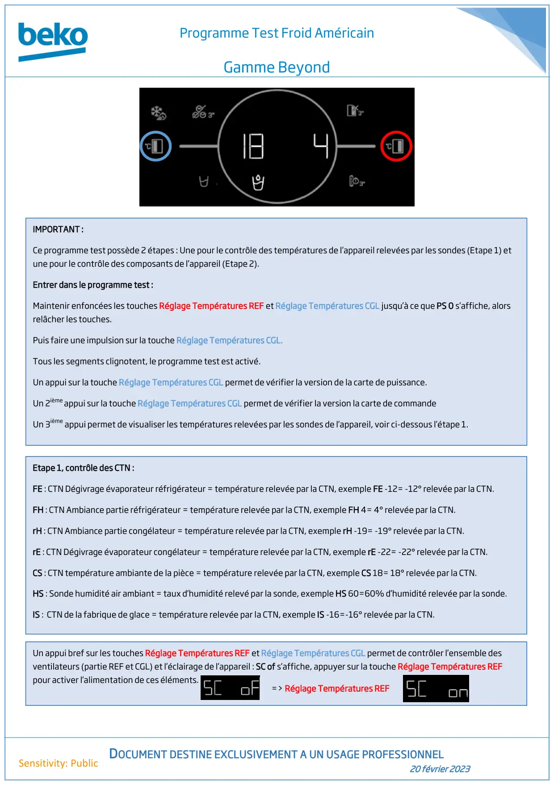
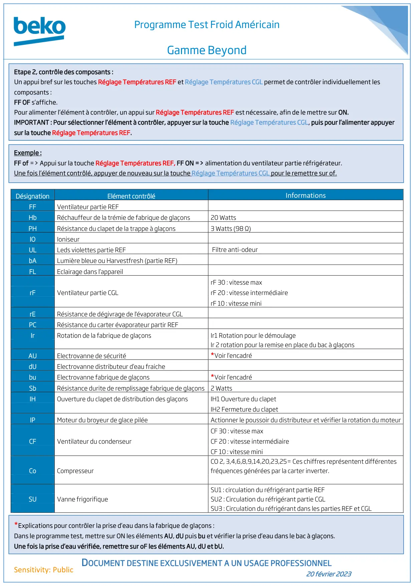
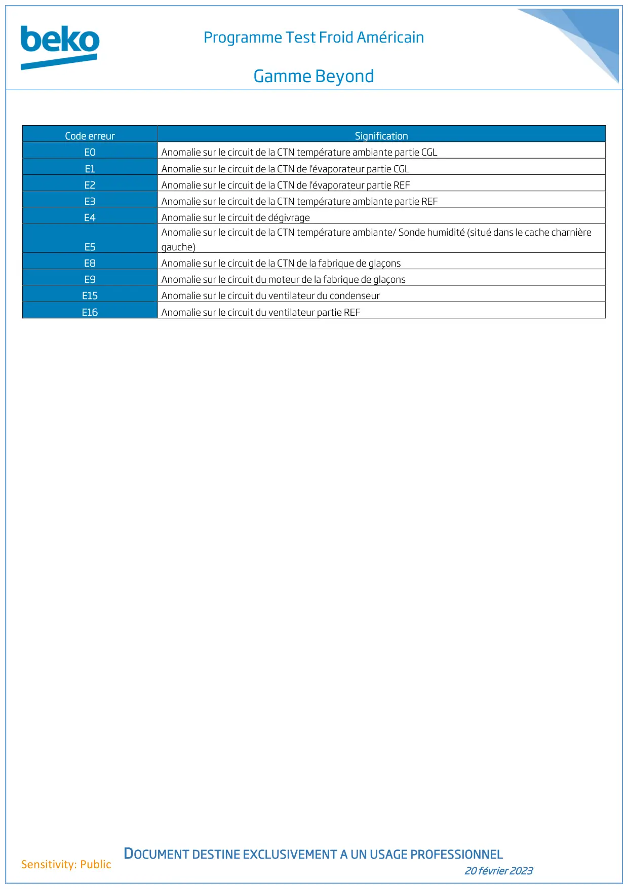

Prog Test Beyond Froid Americain

Programme Test Froid AméricainGamme BeyondDOCUMENT DESTINE EXCLUSIVEMENT A UN USAGE PROFESSIONNEL20 février 2023Sensitivity: PublicIMPORTANT :Ce programme test possède 2 étapes : Une pour le contrôle des températures de l’appareil relevées par les sondes (Etape 1) etune pour le contrôle des composants de l’appareil (Etape 2).Entrer dans le programme test :Maintenir enfoncées les touches Réglage Températures REF et Réglage Températures CGL jusqu’à ce que PS 0 s’affiche, alorsrelâcher les touches.Puis faire une impulsion sur la touche Réglage Températures CGL.Tous les segments clignotent, le programme test est activé.Un appui sur la touche Réglage Températures CGL permet de vérifier la version de la carte de puissance.Un 2ième appui sur la touche Réglage Températures CGL permet de vérifier la version la carte de commandeUn 3ième appui permet de visualiser les températures relevées par les sondes de l’appareil, voir ci-dessous l’étape 1.Etape 1, contrôle des CTN :FE : CTN Dégivrage évaporateur réfrigérateur = température relevée par la CTN, exemple FE -12= -12° relevée par la CTN.FH : CTN Ambiance partie réfrigérateur = température relevée par la CTN, exemple FH 4= 4° relevée par la CTN.rH : CTN Ambiance partie congélateur = température relevée par la CTN, exemple rH -19= -19° relevée par la CTN.rE : CTN Dégivrage évaporateur congélateur = température relevée par la CTN, exemple rE -22= -22° relevée par la CTN.CS : CTN température ambiante de la pièce = température relevée par la CTN, exemple CS 18= 18° relevée par la CTN.HS : Sonde humidité air ambiant = taux d’humidité relevé par la sonde, exemple HS 60=60% d’humidité relevée par la sonde.IS : CTN de la fabrique de glace = température relevée par la CTN, exemple IS -16=-16° relevée par la CTN.Un appui bref sur les touches Réglage Températures REF et Réglage Températures CGL permet de contrôler l’ensemble desventilateurs (partie REF et CGL) et l’éclairage de l’appareil : SC of s’affiche, appuyer sur la touche Réglage Températures REFpour activer l’alimentation de ces éléments.=> Réglage Températures REF
1 / 3
Programme Test Froid AméricainGamme BeyondDOCUMENT DESTINE EXCLUSIVEMENT A UN USAGE PROFESSIONNEL20 février 2023Sensitivity: PublicDésignationElément contrôléInformationsFFVentilateur partie REFHbRéchauffeur de la trémie de fabrique de glaçons20 WattsPHRésistance du clapet de la trappe à glaçons3 Watts (98 Ω)IOIoniseurULLeds violettes partie REFFiltre anti-odeurbALumière bleue ou Harvestfresh (partie REF)FLEclairage dans l’appareilrF 30 : vitesse maxrFVentilateur partie CGLrF 20 : vitesse intermédiairerF 10 : vitesse minirERésistance de dégivrage de l'évaporateur CGLPCRésistance du carter évaporateur partir REFIrRotation de la fabrique de glaçonsIr1 Rotation pour le démoulageIr 2 rotation pour la remise en place du bac à glaçonsAUElectrovanne de sécurité*Voir l’encadrédUElectrovanne distributeur d’eau fraichebuElectrovanne fabrique de glaçons*Voir l’encadréSbRésistance durite de remplissage fabrique de glaçons 2 WattsIHOuverture du clapet de distribution des glaçonsIH1 Ouverture du clapetIH2 Fermeture du clapetIPMoteur du broyeur de glace piléeActionner le poussoir du distributeur et vérifier la rotation du moteurCF 30 : vitesse maxCFVentilateur du condenseurCF 20 : vitesse intermédiaireCF 10 : vitesse miniCoCompresseurCO 2, 3,4,6,8,9,14,20,23,25= Ces chiffres représentent différentesfréquences générées par la carter inverter.SU1 : circulation du réfrigérant partie REFSUVanne frigorifiqueSU2 : Circulation du réfrigérant partie CGLSU3 : Circulation du réfrigérant dans les parties REF et CGLEtape 2, contrôle des composants :Un appui bref sur les touches Réglage Températures REF et Réglage Températures CGL permet de contrôler individuellement lescomposants :FF OF s’affiche.Pour alimenter l’élément à contrôler, un appui sur Réglage Températures REF est nécessaire, afin de le mettre sur ON.IMPORTANT : Pour sélectionner l’élément à contrôler, appuyer sur la touche Réglage Températures CGL, puis pour l’alimenter appuyersur la touche Réglage Températures REF.Exemple :FF of => Appui sur la touche Réglage Températures REF, FF ON => alimentation du ventilateur partie réfrigérateur.Une fois l’élément contrôlé, appuyer de nouveau sur la touche Réglage Températures CGL pour le remettre sur of.*Explications pour contrôler la prise d’eau dans la fabrique de glaçons :Dans le programme test, mettre sur ON les éléments AU, dU puis bu et vérifier la prise d’eau dans le bac à glaçons.Une fois la prise d’eau vérifiée, remettre sur oF les éléments AU, dU et bU.
2 / 3
Programme Test Froid AméricainGamme BeyondDOCUMENT DESTINE EXCLUSIVEMENT A UN USAGE PROFESSIONNEL20 février 2023Sensitivity: PublicCode erreurSignificationE0Anomalie sur le circuit de la CTN température ambiante partie CGLE1Anomalie sur le circuit de la CTN de l'évaporateur partie CGLE2Anomalie sur le circuit de la CTN de l'évaporateur partie REFE3Anomalie sur le circuit de la CTN température ambiante partie REFE4Anomalie sur le circuit de dégivrageE5Anomalie sur le circuit de la CTN température ambiante/ Sonde humidité (situé dans le cache charnièregauche)E8Anomalie sur le circuit de la CTN de la fabrique de glaçonsE9Anomalie sur le circuit du moteur de la fabrique de glaçonsE15Anomalie sur le circuit du ventilateur du condenseurE16Anomalie sur le circuit du ventilateur partie REF
3 / 3